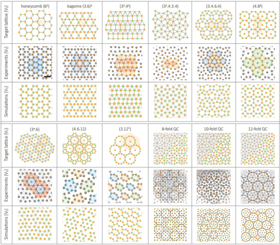

Dual-symmetry-guided assembly of complex lattices
This work uses dual-symmetry principles and programmable confinement to guide the assembly of complex two-dimensional lattices, offering a route to structures that are difficult to obtain through conventional thermodynamic self-assembly.